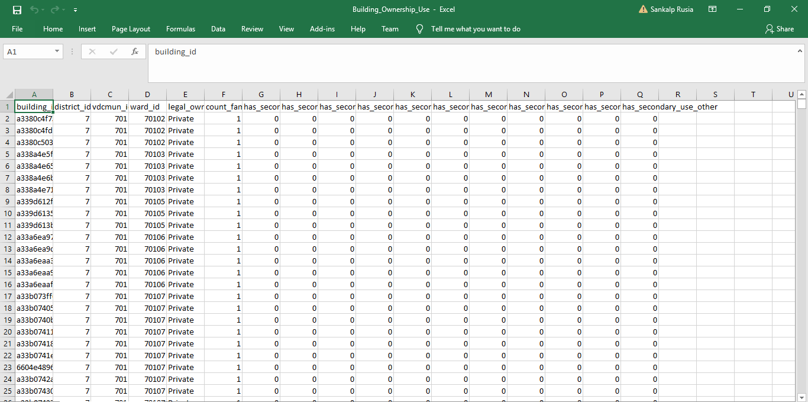
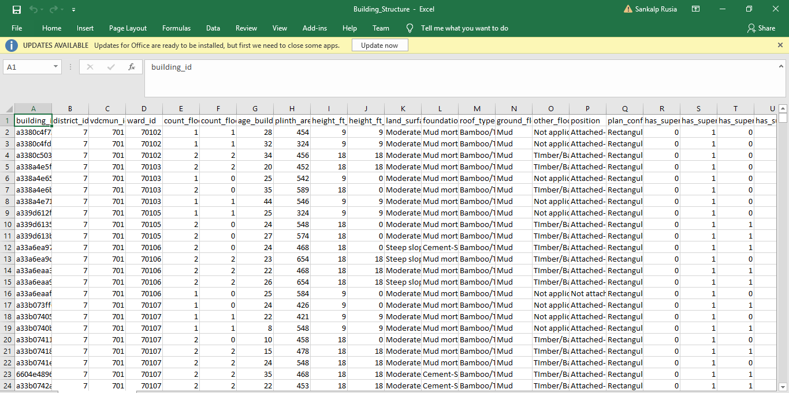
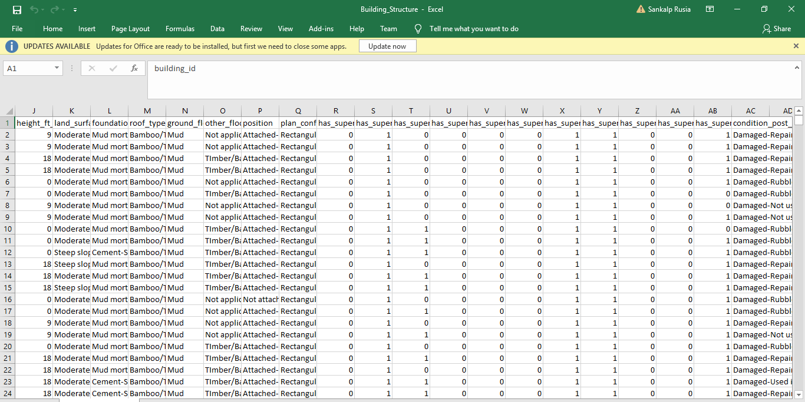
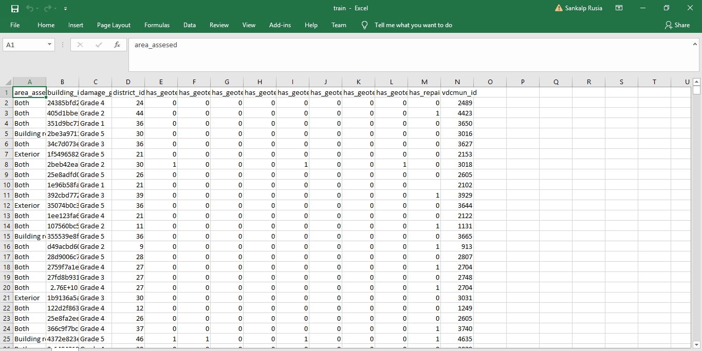
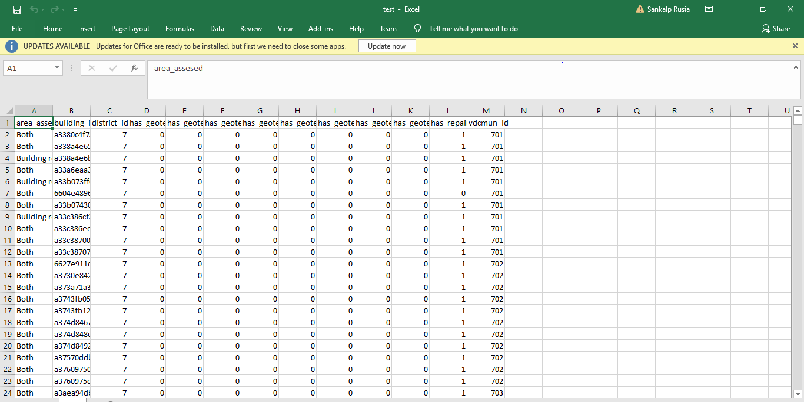
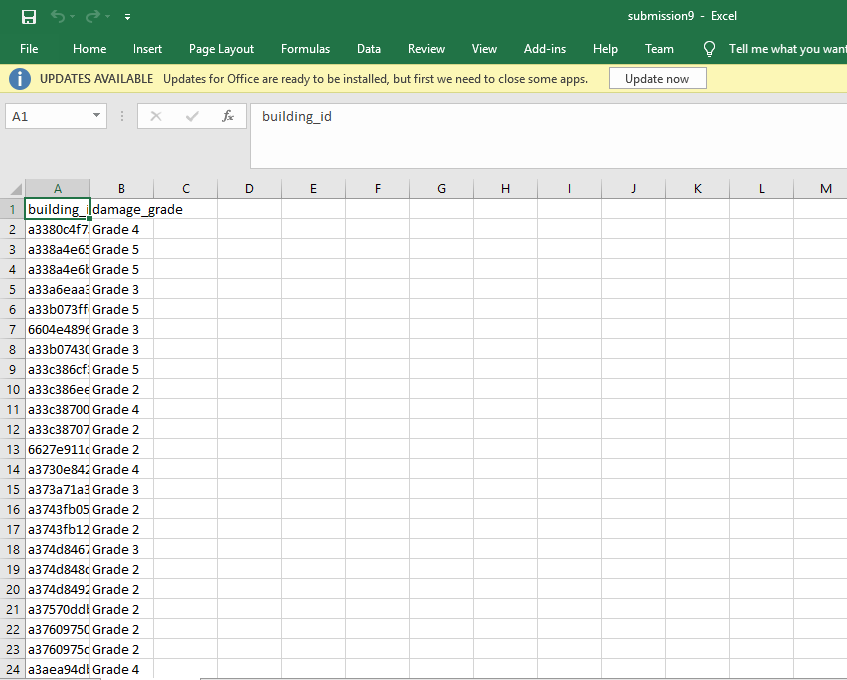

Earthquakes are one of the greatest natural disaster. The damage caused by an earthquake to lives or property is severe. In todays world, we have a huge infrastructure, big buildings and highways and a lot of advanced resources. But we can not stop natural disaster like an earthquake. So the main objective of this project is to predict the amount of damage caused to a building by an earthquake.
We are givem two CSV files(source-hackerearth.com) : Building_Structure and Building_Ownership_Use. (These files are not uploaded here as their size exceeds 2Gb. But for reference, their images are given below.) The details of these files is given in this ReadMe file.
 Building_Ownership_Use  Building_Structure  Building_StructureThe task is to use these CSV files data and combine it to create a new set of training data. After training the model, predict the damage grade on the testing data and submit in a given format.
Preparing the data
We are give a train.csv file which contains 70% of the building_id along with their damage grades given. Now using Building_Structure.csv and Building_Ownership_Use.csv, we add details to our train.csv file by matching building_id of all three files and adding columns of the given files to train.csv file. We now filter the data by removing the columns with least importance. There are many techniques used to check the important attributes as given here. Now the training dataset is ready for training the model.
 train.csvWe split training data into two parts: x_train and y_train.
y_train contains the given output (i.e, damage_grade) of training dataset using which we need to train the model and predict the output in test.csv.
x_train contains remaining attributes of train.csv.
Training the Data
Once the data is gathered, we use Classification model of machine learning to train the model. Here we have used RandomForest classification model. As we need the result into five different classes, i.e, Grade 1, Grade 2,... Grade 5. There are various machine learning models for classification as well as regression problems. (You may check them out here)
Preparing testing data and predicting the result
Once the model is trained, you prepare the testing data. We are give the remaining 30% of building ids for which we have to predict the damage grade. We add the same attributes in test.csv as we added in train.csv.
 test.csvAfter running the trained model on test dataset, we get the predicted result for the input. We now seperate the result into a seperate submission.csv file and save it.
 submission.csvThe complete code and reference to this project is given in my
github repository .
Thank You for reading.